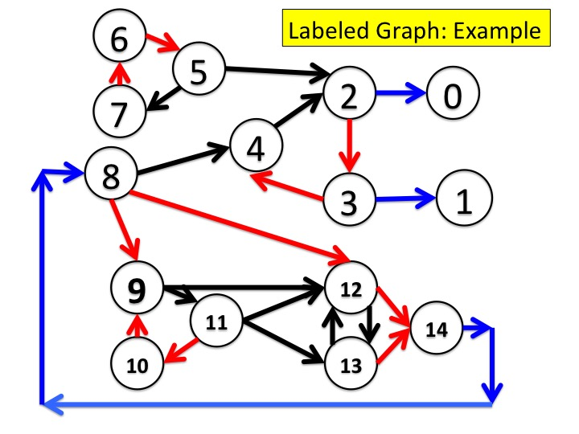

Fig.2 - Labeled Graph: Example.
The graph shown in Fig.2 has three labels red, black and blue shown
in edges colored red, black and blue. Red and black are fair
while blue is unfair. Recall that edges that are self loops are not
shown in the figure. For example, the black edge from \(6\) to
itself is not shown. Likewise, the blue edge from \(8\) to
itself is not shown. Also, note that there can be multiple outgoing
edges of the same color from the same vertex. For example, \(8\) has
two outgoing red edges.
For each of the following vertex sets \(X\), does there exist an
edge with a fair label from \(X\) to \(\overline{X}\)? Which of
these sets, or their complements, are visited infinitely often by
all fair paths?